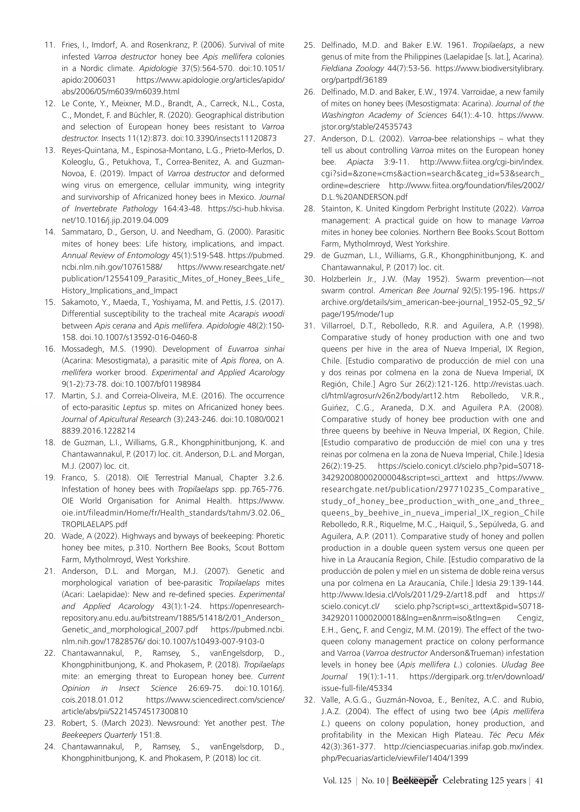

11. Fries, I., Imdorf, A. and Rosenkranz, P. (2006). Survival of mite
infested Varroa destructor honey bee Apis mellifera colonies
in a Nordic climate. Apidologie 37(5):564-570. doi:10.1051/
apido:2006031
https://www.apidologie.org/articles/apido/
abs/2006/05/m6039/m6039.html
12. Le Conte, Y., Meixner, M.D., Brandt, A., Carreck, N.L., Costa,
C., Mondet, F. and Büchler, R. (2020). Geographical distribution
and selection of European honey bees resistant to Varroa
destructor. Insects 11(12):873. doi:10.3390/insects11120873
13. Reyes-Quintana, M., Espinosa-Montano, L.G., Prieto-Merlos, D.
Koleoglu, G., Petukhova, T., Correa-Benitez, A. and Guzman-
Novoa, E. (2019). Impact of Varroa destructor and deformed
wing virus on emergence, cellular immunity, wing integrity
and survivorship of Africanized honey bees in Mexico. Journal
of Invertebrate Pathology 164:43-48. https://sci-hub.hkvisa.
net/10.1016/j.jip.2019.04.009
14. Sammataro, D., Gerson, U. and Needham, G. (2000). Parasitic
mites of honey bees: Life history, implications, and impact.
Annual Review of Entomology 45(1):519-548. https://pubmed.
ncbi.nlm.nih.gov/10761588/
https://www.researchgate.net/
publication/12554109_Parasitic_Mites_of_Honey_Bees_Life_
History_Implications_and_Impact
15. Sakamoto, Y., Maeda, T., Yoshiyama, M. and Pettis, J.S. (2017).
Differential susceptibility to the tracheal mite Acarapis woodi
between Apis cerana and Apis mellifera. Apidologie 48(2):150-
158. doi.10.1007/s13592-016-0460-8
16. Mossadegh, M.S. (1990). Development of Euvarroa sinhai
(Acarina: Mesostigmata), a parasitic mite of Apis florea, on A.
mellifera worker brood. Experimental and Applied Acarology
9(1-2):73-78. doi:10.1007/bf01198984
17. Martin, S.J. and Correia-Oliveira, M.E. (2016). The occurrence
of ecto-parasitic Leptus sp. mites on Africanized honey bees.
Journal of Apicultural Research (3):243-246. doi:10.1080/0021
8839.2016.1228214
18. de Guzman, L.I., Williams, G.R., Khongphinitbunjong, K. and
Chantawannakul, P. (2017) loc. cit. Anderson, D.L. and Morgan,
M.J. (2007) loc. cit.
19. Franco, S. (2018). OIE Terrestrial Manual, Chapter 3.2.6.
Infestation of honey bees with Tropilaelaps spp. pp.765-776.
OIE World Organisation for Animal Health. https://www.
oie.int/fileadmin/Home/fr/Health_standards/tahm/3.02.06_
TROPILAELAPS.pdf
20. Wade, A (2022). Highways and byways of beekeeping: Phoretic
honey bee mites, p.310. Northern Bee Books, Scout Bottom
Farm, Mytholmroyd, West Yorkshire.
21. Anderson, D.L. and Morgan, M.J. (2007). Genetic and
morphological variation of bee-parasitic Tropilaelaps mites
(Acari: Laelapidae): New and re-defined species. Experimental
and Applied Acarology 43(1):1-24. https://openresearch-
repository.anu.edu.au/bitstream/1885/51418/2/01_Anderson_
Genetic_and_morphological_2007.pdf
https://pubmed.ncbi.
nlm.nih.gov/17828576/ doi:10.1007/s10493-007-9103-0
22. Chantawannakul,
P.,
Ramsey,
S.,
vanEngelsdorp,
D.,
Khongphinitbunjong, K. and Phokasem, P. (2018). Tropilaelaps
mite: an emerging threat to European honey bee. Current
Opinion
in
Insect
Science
26:69-75.
doi:10.1016/j.
cois.2018.01.012
https://www.sciencedirect.com/science/
article/abs/pii/S2214574517300810
23. Robert, S. (March 2023). Newsround: Yet another pest. The
Beekeepers Quarterly 151:8.
24. Chantawannakul,
P.,
Ramsey,
S.,
vanEngelsdorp,
D.,
Khongphinitbunjong, K. and Phokasem, P. (2018) loc cit.
25. Delfinado, M.D. and Baker E.W. 1961. Tropilaelaps, a new
genus of mite from the Philippines (Laelapidae [s. lat.], Acarina).
Fieldiana Zoology 44(7):53-56. https://www.biodiversitylibrary.
org/partpdf/36189
26. Delfinado, M.D. and Baker, E.W., 1974. Varroidae, a new family
of mites on honey bees (Mesostigmata: Acarina). Journal of the
Washington Academy of Sciences 64(1):.4-10. https://www.
jstor.org/stable/24535743
27. Anderson, D.L. (2002). Varroa-bee relationships – what they
tell us about controlling Varroa mites on the European honey
bee.
Apiacta
3:9-11.
http://www.fiitea.org/cgi-bin/index.
cgi?sid=&zone=cms&action=search&categ_id=53&search_
ordine=descriere
http://www.fiitea.org/foundation/files/2002/
D.L.%20ANDERSON.pdf
28. Stainton, K. United Kingdom Perbright Institute (2022). Varroa
management: A practical guide on how to manage Varroa
mites in honey bee colonies. Northern Bee Books.Scout Bottom
Farm, Mytholmroyd, West Yorkshire.
29. de Guzman, L.I., Williams, G.R., Khongphinitbunjong, K. and
Chantawannakul, P. (2017) loc. cit.
30. Holzberlein Jr., J.W. (May 1952). Swarm prevention—not
swarm control. American Bee Journal 92(5):195-196. https://
archive.org/details/sim_american-bee-journal_1952-05_92_5/
page/195/mode/1up
31. Villarroel, D.T., Rebolledo, R.R. and Aguilera, A.P. (1998).
Comparative study of honey production with one and two
queens per hive in the area of Nueva Imperial, IX Region,
Chile. [Estudio comparativo de producción de miel con una
y dos reinas por colmena en la zona de Nueva Imperial, IX
Región, Chile.] Agro Sur 26(2):121-126. http://revistas.uach.
cl/html/agrosur/v26n2/body/art12.htm
Rebolledo,
V.R.R.,
Guiñez, C.G., Araneda, D.X. and Aguilera P.A. (2008).
Comparative study of honey bee production with one and
three queens by beehive in Neuva Imperial, IX Region, Chile.
[Estudio comparativo de producción de miel con una y tres
reinas por colmena en la zona de Nueva Imperial, Chile.] Idesia
26(2):19-25.
https://scielo.conicyt.cl/scielo.php?pid=S0718-
34292008000200004&script=sci_arttext and https://www.
researchgate.net/publication/297710235_Comparative_
study_of_honey_bee_production_with_one_and_three_
queens_by_beehive_in_nueva_imperial_IX_region_Chile
Rebolledo, R.R., Riquelme, M.C., Haiquil, S., Sepúlveda, G. and
Aguilera, A.P. (2011). Comparative study of honey and pollen
production in a double queen system versus one queen per
hive in La Araucanía Region, Chile. [Estudio comparativo de la
producción de polen y miel en un sistema de doble reina versus
una por colmena en La Araucanía, Chile.] Idesia 29:139-144.
http://www.Idesia.cl/Vols/2011/29-2/art18.pdf
and
https://
scielo.conicyt.cl/
scielo.php?script=sci_arttext&pid=S0718-
34292011000200018&lng=en&nrm=iso&tlng=en
Cengiz,
E.H., Genç, F. and Cengiz, M.M. (2019). The effect of the two-
queen colony management practice on colony performance
and Varroa (Varroa destructor Anderson&Trueman) infestation
levels in honey bee (Apis mellifera L.) colonies. Uludag Bee
Journal
19(1):1-11.
https://dergipark.org.tr/en/download/
issue-full-file/45334
32. Valle, A.G.G., Guzmán-Novoa, E., Benítez, A.C. and Rubio,
J.A.Z. (2004). The effect of using two bee (Apis mellifera
L.) queens on colony population, honey production, and
profitability in the Mexican High Plateau. Téc Pecu Méx
42(3):361-377. http://cienciaspecuarias.inifap.gob.mx/index.
php/Pecuarias/article/viewFile/1404/1399
Vol. 125 | No. 10 |
Celebrating 125 years | 41